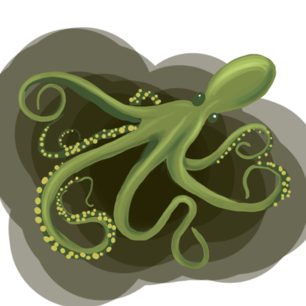

Kraken
Angler’s arch enemy is Kraken.
Kraken has eight tentacles and spews ink.
He terrorizes the sea and is responsible for the
sinking of Angler’s home- Atlantis.
Kraken comes from Octopolis, located
off the coast of Australia in Jarvis Bay. Octopolis
is a battle ground for octopi and in one fatful battle,
Kraken was exposed to a radioactive waste spill in the Bay
and became an evil sea monster.
